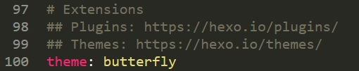

用Hexo和Github.io搭建你的個人網站
前言
之所以會想要設計給自己的一個部落格，是因為我之前在查詢演算法的相關資料時，看到很多人都是用github.io當自己的部落格，並搭配hexo讓自己的網站變得非常的精美、漂亮，所以便搞得我也想自己做一個網頁當自己的部落格。而由於本人的美感只能用「悽慘」兩字形容，所以只好用hexo上各位大神設計出的模板套用在自己的網頁上，讓我的部落格看起來也是有模有樣的，真的很感謝他們願意無私的供自己的作品給大家使用。
這篇文主要是想將我從設置github，到配置hexo，以及最後套用模板並個人化的過程記錄下來。畢竟有記錄下來，才算是真正的學到，也比較印象深刻。
Github
1.首先我們要有Github的帳號，沒有的話就註冊一個吧。
2.在頁面的右上角處看到”+”號，按下去，並點選”New repository”。
3.接著將Repository name取名為username.github.io並按下最下方的Create repository
- username為你帳號的名字，像我是scar0615，所以我的專案名稱為scar0615.github.io。
將Hexo連結Github
1.首先我們需要安裝以下這幾個軟體
如果你是用mac作業系統的話，還需要安裝Xcode，看網路上大家都不推薦直接去AppStore下載，比較建議從網路上下載。
2.都安裝完後，開啟命令提示字元(MacOS則是開啟終端機)並輸入以下指令來安裝Hexo：
1 | npm install -g hexo-cli |
註：-g也可放在hexo-cli的後面
用mac的這一步很多人都會報一個叫EACCES 的錯，我前幾天在用macbook air安裝hexo的時候也遇到了這個問題，因為mac不給你安裝的權限，所以我們試試sudo：
1 | sudo npm install hexo -g |
3.這裡先建議你到你想要建立的目錄之後，再來輸入以下指令：
1 | hexo init projectname |
像我是建在D槽裡面，所以我就是先將檔案總管的畫面顯示成D槽，然後在位址的部分直接輸入cmd並按下enter，這樣命令提示字元的位置就會是你要的那個位置，然後我們就能進行這一步要輸入的指令了。
註：記得把projectname換成自己的名稱
4.建立完畢後我們來進入到剛剛建立的Hexo中，所以在終端機這邊輸入：
1 | cd projectname |
5.我們還有npm的相關套件需要安裝，所以在終端機這邊輸入：
1 | npm install |
6.到這邊就設置完畢，可以啟動Hexo看看你的網頁長什麼樣子。
1 | hexo s |
INFO會跟你說”Hexo is running at http://localhost:4000"，所以開新分頁並在網址輸入http://localhost:4000即可。
7.
1 | Username for 'https://github.com':username |
主題
1.我們可以到Hexo首頁的頁面上方的”主題”尋找你想要的主題
2.下載主題後，將整個資料夾移到theme裡面(如果下載後是RAR、ZIP檔則需要先壓縮)。
3.開啟圖上的_config.yml檔，找到theme的位置，改成你主題的名稱。
- 像我的主題叫butterfly，所以我的長這樣：

4.到這邊就設置完畢，可以啟動Hexo看看你的網頁長什麼樣子。
1 | hexo s |
Hexo設定
1.開啟根目錄的_config.yml檔，我們來修改裡面的內容。
1 | # Site |
2.清除之前所建立的靜態檔案：
1 | hexo cl |
註：這個步驟通常可以直接略過，也就是你更新完要上傳到github的時候，直接做步驟3就可以了。
3.部屬到github並創建靜態頁面：
1 | hexo d -g |
註：d → 部屬、g → 生成靜態頁面
差異：
hexo s只是抓你資料夾裡面的元素拼湊成一個本地的網頁，也就是別人看不到。
hexo d -g則是將所有的東西上傳到github，然後只要輸入網址就能看到。
4.完成，現在只要是知道你這個repository的網址的人，都能看到你的網站了。
個人化
由於小的我是使用Butterfly這個主題，我將用Butterfly來示範，所以不是用Butterfly的人，我只能say sorry啦。
紅框的地方請至themes\butterfly裡找到_config.yml打開，找到sub:那行進行更改。
橘框的地方在同一個檔案裡的menu:那個區塊更改
首頁的背景在同一個檔案裡的index_img:那行更改
- 可以從網路抓圖片，或是用純色，也可以和我一樣用函式寫出一個漸層的封面。
教學就先到這裡啦，不過我的網站目前還很乾淨，我還想新增一些功能，等都設定完後，我還會再來更新這篇文。
真的很感謝由JerryC大大設計的Butterfly主題，這個主題相當有美感，而且有很多的地方可以讓我們自定義，玩出很多變化。當時在Hexo挑選主題的時候，看到Butterfly第一眼我就決定是它了，而且他本人也有出將它的主題個人化的教學，比我的還詳細很多。
主題作者的教學Butterfly 安裝文檔(一) 快速開始